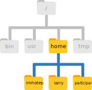

2.2 Navigating Files and Directories
Teaching: 40 min || Exercises: 20 min
Overview
2.2.1 The file system
The part of the operating system responsible for managing files and directories is called the file system. It organizes our data into files, which hold information, and directories (also called “folders”), which hold files or other directories.
Several commands are frequently used to create, inspect, rename, and delete files and directories. To start exploring them, we’ll go to our open shell window.
First let’s find out where we are by running a command called pwd (which stands for “print working directory”). Directories are like places - at any time while we are using the shell we are in exactly one place, called our current working directory. Commands mostly read and write files in the current working directory, i.e. “here”, so knowing where you are before running a command is important. pwd shows you where you are:
Here, the computer’s response is /home/ubuntu, which is your home directory:
The home directory path will look different on different operating systems. On Mac it may look like /Users/ubuntu, and on Windows it will be similar to C:\Documents and Settings\ubuntu or C:\Users\ubuntu.
(Note that it may look slightly different for different versions of Windows, and ubuntu may be replaced with your username.) In future examples, we’ve used Linux output as the default - Mac and Windows output may differ slightly, but should be generally similar.
To understand what a “home directory” is, let’s have a look at how the file system as a whole is organized. For the sake of this example, we’ll be illustrating the filesystem on a typical Linux computer. After this illustration, you’ll be learning commands to explore your own filesystem, which will be constructed in a similar way, but not be exactly identical.
On a typical Linux computer, the filesystem looks like this:

At the top is the root directory that holds everything else. We refer to it using a slash character, /, on its own; this is the leading slash in /home/ubuntu.
Inside that directory are several other directories:
bin(which is where some built-in programs are stored),usr(for miscellaneous user files),home(where users’ personal directories are located),tmp(for temporary files that don’t need to be stored long-term), and so on.
We know that our current working directory /home/ubuntu is stored inside /home because /home is the first part of its name. Similarly, we know that /home is stored inside the root directory / because its name begins with /.
Slashes
Notice that there are two meanings for the
/character. When it appears at the front of a file or directory name, it refers to the root directory. When it appears inside a name, it’s just a separator.
Underneath /home, we find one directory for each user with an account on the machine, in this example imhotep, larry, and ubuntu (you).

The user imhotep’s files are stored in /home/imhotep, user larry’s in /home/larry, and yours in /home/ubuntu. Because you are the current user in our examples here, this is why we get /home/ubuntu as our home directory. Typically, when you open a new command prompt you will be in your home directory to start.
Now let’s learn the command that will let us see the contents of our own filesystem. We can see what’s in our home directory by running ls, which stands for “listing”:
(Again, your results may be slightly different depending on your operating system and how you have customized your filesystem.)
ls prints the names of the files and directories in the current directory. We can make its output more comprehensible by using the -F option (also known as a switch or a flag) , which tells ls to classify the output by adding a marker to file and directory names to indicate what they are:
- a trailing
/indicates that this is a directory @indicates a link*indicates an executable
Depending on your default options, the shell might also use colors to indicate whether each entry is a file or directory.
Here, we can see that our home directory contains mostly sub-directories. Any names in your output that don’t have a classification symbol, are plain old files.
If your screen gets too cluttered, you can clear your terminal using the clear command. You can still access previous commands using ↑ and ↓ to move line-by-line, or by scrolling in your terminal.
General syntax of a shell command
Consider the command below as a general example of a command, which we will dissect into its component parts:
ls -F /
ls is the command, with an option -F and an argument /. We’ve already encountered options (also called switches or flags) which either start with a single dash (-) or two dashes (--), and they change the behaviour of a command. Arguments tell the command what to operate on (e.g. files and directories). Sometimes options and arguments are referred to as parameters. A command can be called with more than one option and more than one argument: but a command doesn’t always require an argument or an option.
Each part is separated by spaces: if you omit the space between ls and -F the shell will look for a command called ls-F, which doesn’t exist. Also, capitalisation can be important: ls -r is different to ls -R. Also, ls -s is different to ls -S. Find out what each does.
Putting all that together, our command above gives us a listing of files and directories in the root directory /. An example of the output you might get from the above command is given below:
Getting help
ls has lots of other options. There are two common ways to find out how to use a command and what options it accepts:
We can pass a
--helpoption to the command, such as:ls --helpWe can read its manual with
man, such as:man ls
The --help option
Many bash commands, and programs that people have written that can be run from within bash, support a --help option to display more information on how to use the command or program.
If you try to use an option (flag) that is not supported, ls and other commands will usually print an error message similar to:
The man command
The other way to learn about ls is to type
man lsThis will turn your terminal into a page with a description of the ls command and its options and, if you’re lucky, some examples of how to use it.
To navigate through the man pages, you may use ↑ and ↓ to move line-by-line, or try B and Spacebar to skip up and down by a full page. To search for a character or word in the man pages, use / followed by the character or word you are searching for. Sometimes a search will result in multiple hits. If so, you can move between hits using N (for moving forward) and Shift+N (for moving backward).
To quit the man pages, press Q.
Of course there is a third way to access help for commands: Searching the internet via your web browser. When using internet search, including the phrase unix man page in your search query will help to find relevant results.
GNU provides links to its manuals including the core GNU utilities, which covers many commands introduced within this lesson.
2.2.2 Exploring Other Directories
Not only can we use ls on the current working directory, but we can use it to list the contents of a different directory. Let’s take a look at our Desktop directory by running ls -F Desktop, i.e., the command ls with the -F option and the argument Desktop. The argument Desktop tells ls that we want a listing of something other than our current working directory:
Note that if a directory named Desktop does not exist in your current working directory, this command will return an error. Typically, a Desktop directory exists in your home directory, which we assume is the current working directory of your bash shell.
Your output should be a list of all the files and sub-directories in your Desktop directory, including the workshop_files_Bact_Genomics_2023 directory. On many systems, the command line Desktop directory is the same as your GUI Desktop. Take a look at your Desktop to confirm that your output is accurate.
As you may now see, using a bash shell is strongly dependent on the idea that your files and directories are organized in a hierarchical file system. Organizing things hierarchically in this way helps us keep track of our work: it’s possible to put hundreds of files in our home directory, just as it’s possible to pile hundreds of printed papers on our desk, but it’s a self-defeating strategy.
Now that we know the workshop_files_Bact_Genomics_2023 directory is located in our Desktop directory, we can do two things.
First, we can look at its contents, using the same strategy as before, passing a directory name as an argument to ls:
Second, we can also change our location to that directory, so we are no longer located in our home directory.
The command to change locations is cd followed by a directory name to change our working directory. cd stands for “change directory”, which is a bit misleading: the command doesn’t change the directory, it changes the shell’s idea of what directory we are in.
Let’s say we want to move to the 02_unix_intro directory we saw above. We can use the following series of commands to get there:
cd Desktop
cd workshop_files_Bact_Genomics_2023
cd 02_unix_introThese commands will move us from our home directory onto our Desktop, then into the workshop_files_Bact_Genomics_2023 directory, then into the 02_unix_intro directory. You will notice that cd doesn’t print anything. This is normal. Many shell commands will not output anything to the screen when successfully executed. But if we run pwd after it, we can see that we are now in /home/ubuntu/Desktop/workshop_files_Bact_Genomics_2023/02_unix_intro. If we run ls without arguments now, it lists the contents of /home/ubuntu/Desktop/workshop_files_Bact_Genomics_2023/02_unix_intro, because that’s where we are now:
We now know how to go down the directory tree, but how do we go up? We might try the following:
cd workshop_files_Bact_Genomics_2023-bash: cd: workshop_files_Bact_Genomics_2023: No such file or directoryBut we get an error! Why is this?
With our methods so far, cd can only see sub-directories inside your current directory. There are different ways to see directories above your current location; we will start with the simplest.
There is a shortcut in the shell to move up one directory level that looks like this:
cd .... is a special directory name meaning “the directory containing this one”, or more succinctly, the parent of the current directory. Sure enough, if we run pwd after running cd .., we’re back in /home/ubuntu/Desktop/workshop_files_Bact_Genomics_2023:
The special directory .. doesn’t usually show up when we run ls. If we want to display it, we can give ls the -a option:
-a stands for “show all”; it forces ls to show us file and directory names that begin with ., such as .. (which, if we’re in /home/ubuntu, refers to the /home directory)
As you can see, it also displays another special directory that’s just called ., which means “the current working directory”. It may seem redundant to have a name for it, but we will see some uses for it soon.
Note that in most command line tools, multiple options can be combined with a single - and no spaces between the options: ls -F -a is equivalent to ls -Fa.
In addition to the hidden directories .. and ., you may also see a file called .bashrc. This file usually contains shell configuration settings. You may also see other files and directories beginning with .. These are usually files and directories that are used to configure different programs on your computer. The prefix . is used to prevent these configuration files from cluttering the terminal when a standard ls command is used.
These three commands are the basic commands for navigating the filesystem on your computer: pwd, ls and cd. Let’s explore some variations on those commands.
What happens if you type cd on its own, without giving a directory?
cdHow can you check what happened? pwd gives us the answer!
It turns out that cd without an argument will return you to your home directory, which is great if you’ve got lost in your own filesystem.
Let’s try returning to the 02_unix_intro directory from before. Last time, we used three commands, but we can actually string together the list of directories to move to 02_unix_intro in one step:
cd Desktop/workshop_files_Bact_Genomics_2023/02_unix_introCheck that we’ve moved to the right place by running pwd and ls -F
If we want to move up one level from the 02_unix_intro directory, we could use cd ... But there is another way to move to any directory, regardless of your current location.
So far, when specifying directory names, or even a directory path (as above), we have been using relative paths. When you use a relative path with a command like ls or cd, it tries to find that location from where we are, rather than from the root of the file system.
However, it is possible to specify the absolute path to a directory by including its entire path from the root directory, which is indicated by a leading slash. The leading / tells the computer to follow the path from the root of the file system, so it always refers to exactly one directory, no matter where we are when we run the command.
This allows us to move to our workshop_files_Bact_Genomics_2023 directory from anywhere on the filesystem (including from inside 02_unix_intro). To find the absolute path we are looking for, we can use pwd and then extract the piece we need to move to workshop_files_Bact_Genomics_2023.
cd /home/ubuntu/Desktop/workshop_files_Bact_Genomics_2023Run pwd and ls -F to ensure that we are in the directory we expect.
The shell interprets the tilde (~) character at the start of a path to mean “the current user’s home directory”. For example, for your home directory,/home/ubuntu, then ~/Desktop/workshop_files_Bact_Genomics_2023/02_unix_intro is equivalent to /home/ubuntu/Desktop/workshop_files_Bact_Genomics_2023/02_unix_intro. This only works if it is the first character in the path: here/there/~/elsewhere is not here/there/home/ubuntu/elsewhere.
Another shortcut is the dash (-) character. cd will translate - into the previous directory I was in, which is faster than having to remember, then type, the full path. This is a very efficient way of moving back and forth between two directories – i.e. if you execute cd - twice, you end up back in the starting directory.
The difference between cd .. and cd - is that the former brings you up, while the latter brings you back.
Try it! First navigate to ~/Desktop/workshop_files_Bact_Genomics_2023 (you should already be there).
cd ~/Desktop/workshop_files_Bact_Genomics_2023Then cd into the exercise-data/creatures directory
cd 02_unix_intro/bacteria_rpobNow if you run
cd -you’ll see you’re back in ~/Desktop/workshop_files_Bact_Genomics_2023. Run cd - again and you’re back in ~/Desktop/workshop_files_Bact_Genomics_2023/02_unix_intro/bacteria_rpob
Sometimes file and directory names get too long and it’s tedious to have to type the full name for example when moving with cd. We can let the shell do most of the work > through what is called tab completion. Let’s say we are in the /home/ubuntu/Desktop/workshop_files_Bact_Genomics_2023/02_unix_intro/ and we type:
ls norand then press Tab or ↹(the tab key on the keyboard), the shell automatically completes the directory name:
ls north-pacific-gyre/If we press Tab or ↹ again, Bash will add 2012-07-03/ to the command, since it’s the only possible completion (NB. this may not be the case if there is another directory in there). Pressing Tab or ↹ again does nothing, since there are 19 possibilities; pressing Tab or ↹ twice brings up a list of all the files, and so on. This is very useful in practise and we will see more of it later.
Using the filesystem diagram below, if pwd displays /Users/thing, what will ls -F ../backup display?
../backup: No such file or directory2012-12-01 2013-01-08 2013-01-272012-12-01/ 2013-01-08/ 2013-01-27/original/ pnas_final/ pnas_sub/

ls Reading Comprehension
Using the filesystem diagram below, if pwd displays /Users/backup, and -r tells ls to display things in reverse order, what command(s) will result in the following output:
pnas_sub/ pnas_final/ original/
ls pwdls -r -Fls -r -F /Users/backup
2.2.3 Creating directories
We now know how to explore files and directories, but how do we create them in the first place?
Step 1: see where we are and what we already have
Let’s go back to our workshop_files_Bact_Genomics_2023 directory on the Desktop and use ls -F to see what it contains:
Step 2: Create a directory
Let’s create a new directory called thesis using the command mkdir thesis (which has no output):
mkdir thesisAs you might guess from its name, mkdir means “make directory”. Since thesis is a relative path (i.e., does not have a leading slash, like /what/ever/thesis), the new directory is created in the current working directory:
Two ways of doing the same thing
Using the shell to create a directory is no different than using a file explorer. If you open the current directory using your operating system’s graphical file explorer, the
thesisdirectory will appear there too. While the shell and the file explorer are two different ways of interacting with the files, the files and directories themselves are the same.
Good names for files and directories
Complicated names of files and directories can make your life painful when working on the command line. Here we provide a few useful tips for the names of your files.
1. Don’t use spaces.Spaces can make a name more meaningful, but since spaces are used to separate arguments on the command line it is better to avoid them in names of files and directories. You can use
-or_instead (e.g.north-pacific-gyre/rather thannorth pacific gyre/).2. Don’t begin the name with-(dash).Commands treat names starting with
-as options.3. Stick with letters, numbers,.(period or ‘full stop’),-(dash) and_(underscore).Many other characters have special meanings on the command line. We will learn about some of these during this lesson. There are special characters that can cause your command to not work as expected and can even result in data loss.
If you need to refer to names of files or directories that have spaces or other special characters, you should surround the name in quotes (
"").
Since we’ve just created the thesis directory, there’s nothing in it yet:
ls -F thesisStep 3: Create a text file
Let’s change our working directory to thesis using cd, then run a text editor called Nano to create a file called firstdraft.txt:
cd thesis
nano firstdraft.txtWhich Editor?
When we say, “
nanois a text editor,” we really do mean “text”: it can only work with plain character data, not tables, images, or any other human-friendly media. We use it in examples because it is one of the least complex text editors. However, because of this trait, it may not be powerful enough or flexible enough for the work you may need to do after this workshop.On Unix systems (such as Linux and Mac OS X), many programmers use Emacs or Vim (both of which require more time to learn), or a graphical editor such as Gedit. On Windows, you may wish to use Notepad++. Windows also has a built-in editor called
notepadthat can be run from the command line in the same way asnanofor the purposes of this lesson.No matter what editor you use, you will need to know where it searches for and saves files. If you start it from the shell, it will (probably) use your current working directory as its default location. If you use your computer’s start menu, it may want to save files in your desktop or documents directory instead. You can change this by navigating to another directory the first time you “Save As…”
Let’s type in a few lines of text. Once we’re happy with our text, we can press Ctrl+O (press the Ctrl or Control key and, while holding it down, press the O key) to write our data to disk (we’ll be asked what file we want to save this to: press Return or Enter to accept the suggested default of firstdraft.txt).

Once our file is saved, we can use Ctrl-X to quit the editor and return to the shell. Note that pressing Ctrl-X without previously saving the file can achieve both aim of saving and exiting. You can try this out.
Control,Ctrl, or^KeyThe Control key is also called the Ctrl key. There are various ways in which using the Control key may be described. For example, you may see an instruction to press the Control key and, while holding it down, press the X key, described as any of:
Control-XControl+XCtrl-XCtrl+X^XC-xIn nano, along the bottom of the screen you’ll see
^G Get Help ^O WriteOut. This means that you can useControl-Gto get help andControl-Oto save your file.
nano doesn’t leave any output on the screen after it exits, but ls now shows that we have created a file called firstdraft.txt:
What’s In A Name?
You may have noticed that all of the files in our data directory are named “something dot something”, and in this part of the lesson, we always used the extension
.txt. This is just a convention: we can call a filemythesisor almost anything else we want. However, most people use two-part names most of the time to help them (and their programs) tell different kinds of files apart. The second part of such a name is called the filename extension, and indicates what type of data the file holds:.txtsignals a plain text file,.cfgis a configuration file full of parameters for some program or other,.pngis a PNG image, and so on.This is just a convention, albeit an important one. Files contain bytes: it’s up to us and our programs to interpret those bytes according to the rules for plain text files, PDF documents, configuration files, images, and so on.
NB. Naming a PNG image of a whale as
whale.mp3doesn’t somehow magically turn it into a recording of whalesong, though it might cause the operating system to try to open it with a music player when someone double-clicks it.
2.2.4 Moving files and directories
Returning to the workshop_files_Bact_Genomics_2023 directory,
cd ~/Desktop/workshop_files_Bact_Genomics_2023/In our thesis directory we have a file firstdraft.txt which isn’t a particularly informative name, so let’s change the file’s name using mv, which is short for “move”:
mv thesis/firstdraft.txt thesis/second_draft.txtThe first argument tells mv what we are “moving”, while the second is where it’s to go. In this case, we are moving thesis/firstdraft.txt to thesis/seconddrafts.txt, which has the same effect as renaming the file. Sure enough, ls shows us that thesis now contains one file called second_draft.txt:
One has to be careful when specifying the target file name, since mv will silently overwrite any existing file with the same name, which could lead to data loss.
An additional option, mv -i (or mv --interactive), can be used to make mv ask you for confirmation before overwriting.
Note that mv also works on directories.
Let’s move second_draft.txt into the current working directory. We use mv once again, but this time we’ll just use the name of a directory as the second argument to tell mv that we want to keep the filename, but put the file somewhere new. (This is why the command is called “move”.) In this case, the directory name we use is the special directory name . that we mentioned earlier.
mv thesis/second_draft.txt .The effect is to move the file from the directory it was in to the current working directory (.). ls now shows us that thesis is empty:
ls thesisFurther, ls with a filename or directory name as an argument only lists that file or directory. We can use this to see that second_draft.txt is still in our current directory:
2.2.5 Copying files and directories
The cp command works very much like mv, except it copies a file instead of moving it. We can check that it did the right thing using ls with two paths as arguments — like most Unix commands, ls can be given multiple paths at once:
We can also copy a directory and all its contents by using the recursive option -r, e.g. to back up a directory:
cp -r thesis thesis_backupWe can check the result by listing the contents of both the thesis and thesis_backup directory:
2.2.6 Removing files and directories
Returning to the workshop_files_Bact_Genomics_2023 directory, let’s tidy up this directory by removing the second_draft.txt file we created. The Unix command we will use for this is rm (short for ‘remove’):
rm second_draft.txtWe can confirm the file has gone using ls:
You can also check by simply executing ls
lsThe Unix shell doesn’t have a trash bin that we can recover deleted files from (though most graphical interfaces to Unix do). Instead, when we delete files, they are unlinked from the file system so that their storage space on disk can be recycled. Tools for finding and recovering deleted files do exist, but there is no guarantee they will work in any particular situation, since the computer may recycle the file’s disk space right away.
If we try to remove the thesis directory using rm thesis, we get an error message:
This happens because rm by default only works on files, not directories.
rm can remove a directory and all its contents if we use the recursive option -r, and it will do so without any confirmation prompts:
rm -r thesisGiven that there is no way to retrieve files deleted using the shell, rm -r should be used with great caution (you might consider adding the interactive option rm -r -i).
2.2.7 Operations with multiple files and directories
Oftentimes one needs to copy or move several files at once. This can be done by providing a list of individual filenames, or specifying a naming pattern using wildcards.
Using wildcards for accessing multiple files at once
Wildcards
Wildcards can be used in combination with each other e.g. ???ane.pdb matches three characters followed by ane.pdb, giving cubane.pdb ethane.pdb octane.pdb.
When the shell sees a wildcard, it expands the wildcard to create a list of matching filenames before running the command that was asked for. As an exception, if a wildcard expression does not match any file, Bash will pass the expression as an argument to the command as it is. For example typing ls *.pdf in the molecules directory (which contains only files with names ending with .pdb) results in an error message that there is no file called *.pdf.
However, generally commands like wc and ls see the lists of file names matching these expressions, but not the wildcards themselves. It is the shell, not the other programs, that deals with expanding wildcards, and this is an example of orthogonal design.
2.2.8 Credit
Information on this page has been adapted and modified from the following source(s):
Gabriel A. Devenyi (Ed.), Gerard Capes (Ed.), Colin Morris (Ed.), Will Pitchers (Ed.),Greg Wilson, Gerard Capes, Gabriel A. Devenyi, Christina Koch, Raniere Silva, Ashwin Srinath, … Vikram Chhatre. (2019, July). swcarpentry/shell-novice: Software Carpentry: the UNIX shell, June 2019 (Version v2019.06.1).
https://github.com/cambiotraining/UnixIntro